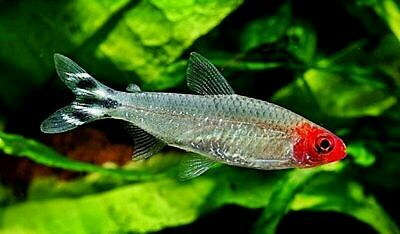
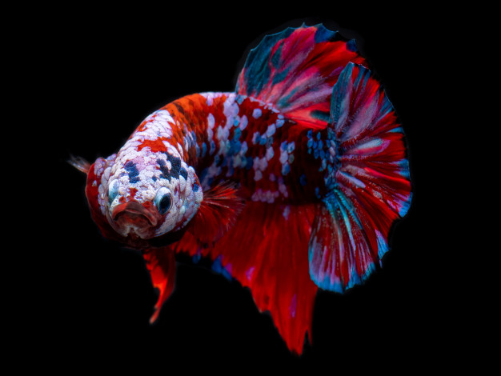

Celestial Pearl Danio Environment

Celestial pearl danios are newer to the aquarium hobby, first hitting the scene less than a decage ago. These fish display a gorgeous orange coloring on thier fins as well as a spotted body akin to a brook trout.
Rummy-Nose Tetra Environment
Rummy-nose Tetra are an energetic schooling fish. These guys have a ton of energery and can be seen darting across the aquarium at almost all hours of the day.
Betta Environment
Betta are a territorial fish which prefer living alone. Some Betta have more relaxed temperment and females can often be kept in groups known as a sorority.